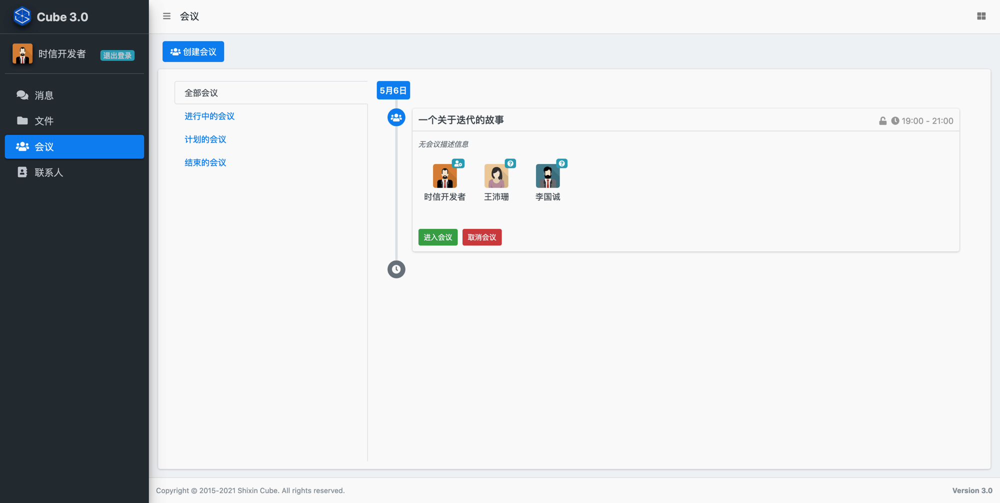
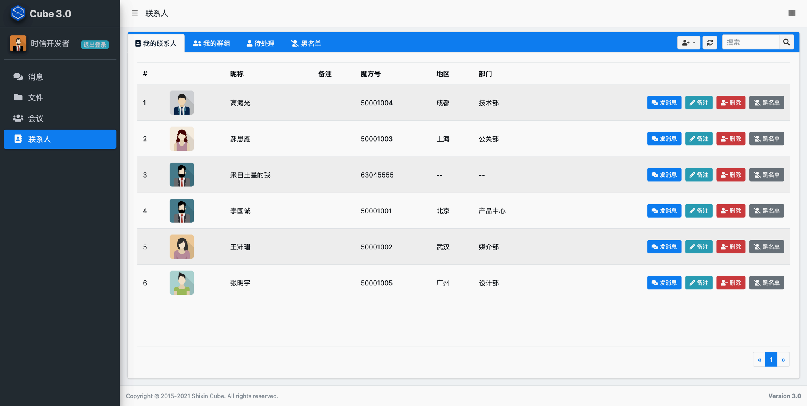
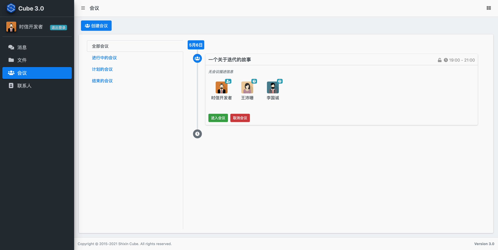
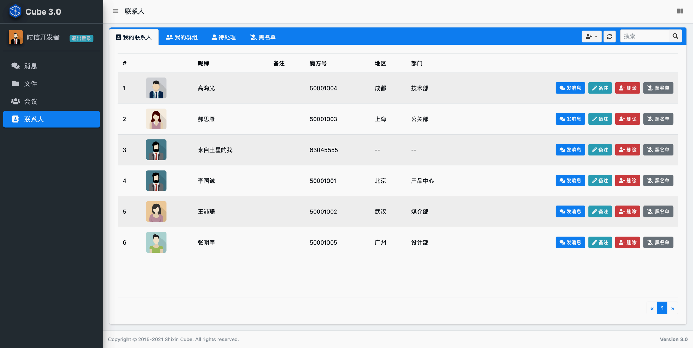

客户端应用程序¶
配置并运行 Web 版应用程序¶
注解
时信魔方的客户端工程默认提供的是使用 Node.js 技术的 Express 作为 Web Application Server 。您可以使用其他 Web 应用服务器技术，例如：Spring 、Struts 或 Rails 等。您可以参考 客户端说明 文档来获得更多信息。
准备工作
编译 Web 版应用程序
1.1. 获取源代码
git clone https://gitee.com/shixinhulian/cube-javascript
或者
git clone https://github.com/shixincube/cube-javascript
1.2. 安装依赖库
进入
web目录，并使用 npm 安装依赖库：cd cube-javascript/web npm install1.3. 编译应用程序
执行编译命令：
npm run build
该编译脚本将编译应用程序的 Web 端 JavaScript 源代码。
1.4. 配置服务器信息
进入
public/javascripts目录，编辑server.js文件：(function (g, $) { /** * 服务器地址。 * 请修改为您的服务器地址。 */ var address = '127.0.0.1'; /** * 服务器端口。 * 填写 0 表示使用默认端口。 */ var port = 0; /** * 用于文件服务的 HTTP 链接。 */ var httpURL = 'http://127.0.0.1:7777'; /** * 用于文件服务的 HTTPS 链接。 */ var httpsURL = 'https://127.0.0.1:7777'; ... })(window, jQuery);
将第36行的服务器地址
'127.0.0.1'修改为时信魔方的服务器地址。配置并启动应用服务器
运行
登录
您可以通过点击“注册新账号”来创建新账号，也可以使用我们内置的试用账号：
账号名
密码
昵称
cube1
shixincube
李国诚
cube2
shixincube
王沛珊
cube3
shixincube
郝思雁
cube4
shixincube
高海光
cube5
shixincube
张明宇

 

配置并运行 iOS 版应用程序¶
[TODO - hidden]